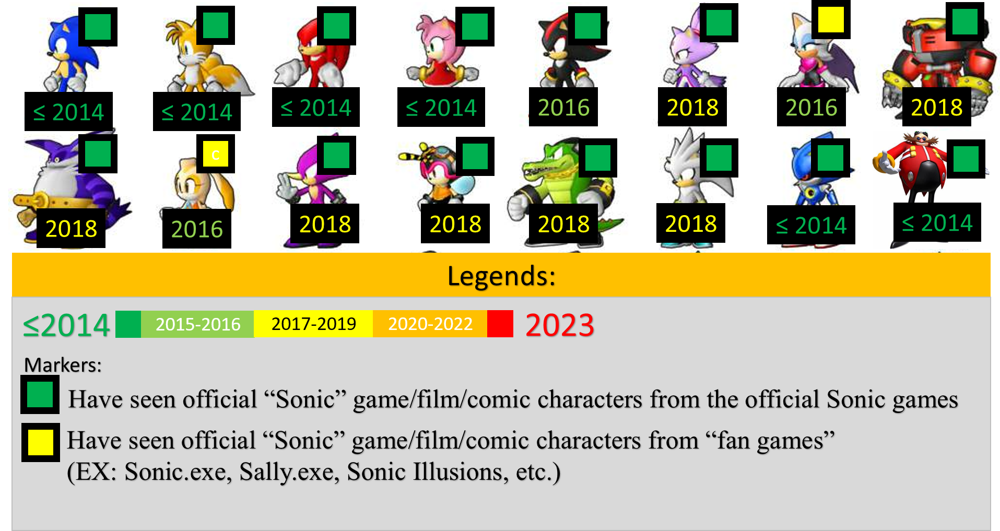

~Trang chính~
31/3/2023
HỒI NÀO TRÍ NGUYÊN ĐÃ THẤY NHỮNG NHÂN VẬT CỦA "SONIC THE HEDGEHOG"?

"Được rồi, tôi đã thấy hầu hết các nhân vật trong trò chơi "Sonic" chính thức và các phương tiện truyền thông khác kể từ khi tôi còn trẻ, từ năm 2013 cho đến nay.
- Lần đầu tiên tôi nhận ra Sonic từ hình thu nhỏ của Video ngẫu nhiên trên YouTube và vào năm 2014-2015, tôi đã thấy "Tails", "Knuckles", "Eggman", "Metal Sonic" và "Amy" từ Sonic Boom.
- Năm 2016-2017 mình hay xem fangame của sonic là "Sonic.EXE" cũng như các phần tiếp theo là "Sally.EXE" và "Rouge.EXE" để xem các nhân vật chính thức của "Sonic Games": Cream, Rouge và Shadow.
- Và cuối cùng! Vào năm 2018, tôi đã xem trò chơi cũ có tên "Sonic Generations" để xem những trò chơi khác được đề cập trong bức ảnh mà tôi đã đăng." - 29_tringuyen (Trí Nguyên)
(GOOGLE DỊCH)
Ok so, I have seen most characters from official "Sonic" games and other media since i was young, from 2013, to today.
- I firstly recognized Sonic from the thumbnail of random YouTube Video and in 2014-2015, i saw "Tails", "Knuckles", "Eggman", "Metal Sonic" and "Amy" from Sonic Boom.
- In 2016-2017, I used to watch sonic fangames, known as "Sonic.EXE", as well as the sequels: "Sally.EXE" and "Rouge.EXE" in order to see the official "Sonic Games" characters: Cream, Rouge and Shadow.
- And Finally! In 2018, I watched the old game named "Sonic Generations" to see the others that are mentioned on the picture i posted on. - 29_tringuyen (Trí Nguyên)